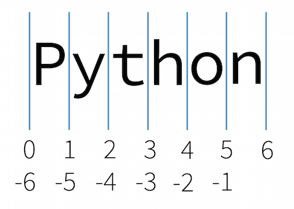

a = 2Wiederholung
Datentypen in Python können grob in folgende Kategorien unterteilt werden:
- Logischer Datentyp (
bool) - Numerische Datentypen (
int,float) - Sequenzen (können aus mehreren Elementen bestehen) (
str,list,tuple) - Mappings (Wertepaare) (
dict)
Mit der Funktion type kann man den Typ eines beliebigen Objektes bestimmen. Der logische und die numerischen Datentypen sind im Prinzip relativ einfach aufgebaut, und wir haben bereits gesehen, wie wir diese Typen verwenden können. In den folgenden beiden Einheiten werden etwas komplexere Typen vorgestellt, welche in Python sehr häufig verwendet werden: die Sequenzdatentypen str, list und tuple sowie der Mapping-Datentyp dict.
Bevor wir diese Typen im Detail besprechen, sehen wir uns aber eine grundlegende Eigenschaft von Datentypen in Python an.
Mutable und immutable
In Python unterscheidet man zwei Arten an Typen:
- Mutable (veränderbar)
- Immutable (nicht veränderbar)
Objekte eines mutable Typs können auch nach deren Erstellung verändert werden. Im Gegensatz dazu können Objekte eines immutable Typs nach deren Erstellung nicht mehr verändert werden.
In dieser Lehrveranstaltung werden wir nur die folgenden zwei veränderbaren Typen genauer betrachten:
- Liste
list - Dictionary
dict
Für uns relevante nicht veränderbare Typen sind:
- Ganzzahl
int, Kommazahlfloat - String
str, Tupletuple
Immutable Typen
Befassen wir uns zunächst mit den nicht veränderbaren (immutable) Typen. Als Beispiel betrachten wir das Objekt 2 vom Typ int. Dieses Objekt ist nicht veränderbar. Im folgenden Beispiel wird das Objekt 2, welches den Namen a hat, tatsächlich auch nicht verändert. Wenn man nämlich a = 3 setzt, ändert man lediglich den Namen a – dieser verweist dann auf das Objekt 3 (ein anderes Objekt, denken Sie an die Analogie mit dem Namensschildchen).
Dies kann man auch mit Hilfe der id-Funktion verifizieren; man erkennt, dass die IDs (also die Objekte) tatsächlich unterschiedlich sind.
id(a)140325151877520a = 3 # Name a verweist jetzt auf das Objekt 3id(a) # andere ID als vorher140325151877552Auch Strings sind immutable. Wenn man versucht, einen einmal angelegten String zu verändern (z.B. ein Zeichen zu ändern), bekommt man eine Fehlermeldung:
s = "Python"s[1] # das 2. Zeichen des Strings (Python beginnt mit 0 zu zählen)'y's[1] = "x" # kann nicht verändert werden, da Strings immutable sind--------------------------------------------------------------------------- TypeError Traceback (most recent call last) Cell In[7], line 1 ----> 1 s[1] = "x" # kann nicht verändert werden, da Strings immutable sind TypeError: 'str' object does not support item assignment
Analog zu Strings sind auch Tuples immutable. Ein Tuple ist eine Sammlung (Sequenz) von verschiedenen Objekten, ähnlich wie eine Liste:
t = 1, 2, 18.33, "Python", 44t[0] # Element 0 des Tuples1t[3] # Element 3 des Tuples'Python't[0] = "X" # kann nicht verändert werden, da Tuples immutable sind--------------------------------------------------------------------------- TypeError Traceback (most recent call last) Cell In[11], line 1 ----> 1 t[0] = "X" # kann nicht verändert werden, da Tuples immutable sind TypeError: 'tuple' object does not support item assignment
Mutable Typen
Im Gegensatz zu den oben erwähnten Beispielen kann man Objekte eines mutable Typs sehr wohl nach der Erstellung verändern. Eine Liste ist genau wie ein Tuple eine Sammlung von verschiedenen Objekten. Man kann eine Liste aber auch nachträglich ändern:
k = [1, 2, 18.33, "Python", 44] # Listek[1, 2, 18.33, 'Python', 44]k[0] # erstes Element1k[3]'Python'k[0] = "X" # Änderung möglich!k['X', 2, 18.33, 'Python', 44]
Hinweis
Eine Liste wird, im Gegensatz zu einem Tuple, erstellt, indem man die Elemente mit eckigen Klammern [ bzw. ] umschließt.
Auch Dictionaries sind mutable:
d = {"a": 12, "b": 3.14, 5: "Python", "c": "yes"}d{'a': 12, 'b': 3.14, 5: 'Python', 'c': 'yes'}d["a"]12d["a"] = "CHANGED" # Änderung möglichd{'a': 'CHANGED', 'b': 3.14, 5: 'Python', 'c': 'yes'}Mehr Details zu den Datentypen list, tuple und dict folgen in der nächsten Einheit. Wir widmen uns jetzt dem nicht veränderbaren Datentyp String.
Strings
Strings erstellen
Der Datentyp str ist ein Sequenzdatentyp und stellt Zeichenketten (Strings) dar. Ein String besteht daher aus einer Sequenz an Zeichen (Buchstaben, Zahlen, Sonderzeichen). Strings werden von einfachen oder doppelten Anführungszeichen umschlossen (aber der Inhalt eines Strings selbst besteht nur aus den Zeichen zwischen diesen Anführungszeichen).
s1 = "String"
s1'String's2 = 'Dies ist ebenfalls ein String.'
s2'Dies ist ebenfalls ein String.'s3 = 'Auch "das" ist ein String'
s3'Auch "das" ist ein String's4 = "And that's a string too!"
s4"And that's a string too!"Lange Strings, die sich auch über mehrere Zeilen erstrecken können, kann man mit drei Anführungszeichen umschließen (Zeilenumbrüche sind dabei möglich und Teil des Strings).
s5 = """Dies ist ein sehr langer Text.
Man kann einfach
in die nächste Zeile gehen.
"""print(s5) # der Inhalt des Strings wird formatiert ausgegebenDies ist ein sehr langer Text.
Man kann einfach
in die nächste Zeile gehen.
s5 # tatsächlicher Wert des Strings, \n steht für Zeilenumbruch'Dies ist ein sehr langer Text.\nMan kann einfach\nin die nächste Zeile gehen.\n'Strings mit drei Anführungszeichen haben wir schon als Docstrings zur kurzen Beschreibung von Funktionen kennengelernt.
Tipp
Möchte man einen String erzeugen, der sowohl " als auch ' enthält, kann man weder das eine noch das andere Zeichen direkt verwenden. Man muss daher das Anführungszeichen, welches für die Definition des Strings verwendet wurde und auch im String vorkommen soll, mit einem vorangestellten \ schreiben (man spricht hier von einer Escape-Sequenz):
x = "Dieser String \"enthält\" doppelte und 'einfache' Anführungszeichen."
y = 'Dieser String "enthält" doppelte und \'einfache\' Anführungszeichen.'Die beiden Strings x und y sind identisch:
x == yTrueDie print-Funktion stellt Escape-Sequenzen aber “richtig” formatiert dar:
print(x)Dieser String "enthält" doppelte und 'einfache' Anführungszeichen.Auch nicht druckbare Zeichen kann man mit Escape-Sequenzen darstellen, wie z.B. einen Zeilenumbruch \n oder einen Tabulator \t. Ein Backslash \ muss ebenfalls als Escape-Sequenz \\ geschrieben werden.
Strings indizieren
Bei Sequenzdatentypen kann man auf einzelne Elemente durch Indizieren zugreifen. Den Index (also die Position des gewünschten Zeichens) gibt man dabei nach dem Objekt in eckigen Klammern an.
Wichtig
Python beginnt mit 0 zu zählen, d.h. das erste Element hat den Index 0. Den Index kann man daher als Unterschied/Abstand zum ersten Element interpretieren.
s = "String"
s'String's[0] # erstes Zeichen'S's[1] # zweites Zeichen't'Mit negativen Indizes kann man Elemente von hinten nach vorne ansprechen, d.h. −1 ist das letzte Element, −2 das vorletzte, usw.
s[-1] # letztes Zeichen'g's[-2] # vorletztes Zeichen'n'Strings slicen
Man kann auch mehrere Elemente auf einmal herausgreifen. Dazu schreibt man in die eckigen Klammern den Startindex, einen Doppelpunkt, und den Endindex.
Wichtig
Der Endindex zählt nicht mehr zum Bereich dazu!
Wenn man auf diese Art (also unter Verwendung des Doppelpunkts) mehrere Elemente herausgreift, spricht man von einem Slice.
Hinweis
Gibt man den ersten Index nicht an, wird vom ersten Element (inklusive) gezählt. Gibt man den Endindex nicht an, wird bis zum letzten Element (inklusive) gezählt.
s'String's[0:4] # 4 Elemente, Index 0, 1, 2, 3, gleichwertig mit s1[:4]'Stri's[4:6] # 2 Elemente, Index 4, 5'ng's[:3] # 3 Elemente, Index 0, 1, 2'Str's[2:] # Index 2 bis zum letzten Element'ring's[2:-1] # Index 2 bis zum letzten Element (exklusive)'rin's[1:-3] # Index 1 bis zum drittletzten Element (exklusive)'tr'
Tipp
Die Tatsache, dass der Startindex immer inklusive ist und der Endindex immer exklusive ist, hat den Vorteil, dass man sich durch die Differenz der beiden Indizes sofort die Anzahl der Elemente im Slice ausrechnen kann. Beispielsweise erkennt man so, dass x[73:81] genau \(81 - 73 = 8\) Elemente enthält.
Angrenzende Slices kann man intuitiv erstellen, z.B.:
s[:2] # die ersten 2 Zeichen'St's[2:] # die restlichen Zeichen'ring'Man kann optional nach dem Endindex noch einen weiteren Doppelpunkt gefolgt von der Schrittweite angeben (standardmäßig ist diese Schrittweite 1). So kann man z.B. jedes zweite Element herausgreifen:
s[::2]'Srn'Wenn man die Reihenfolge der Elemente umdrehen möchte, gibt man als Schrittweite −1 an.
s[4:1:-1]'nir's[-1:-4:-1]'gni's[::-1] # ganzen String umdrehen'gnirtS'Man kann sich die Indizes als Grenzen zwischen den Elementen vorstellen:

Arbeiten mit Strings
Die Funktion len gibt die Länge (d.h. die Anzahl der Elemente) einer Sequenz zurück.
s'String'len(s)6len("Das ist ein relativ langer String")33Ein String der Länge 0 ist ebenfalls ein regulärer String – er besitzt nur kein Element.
s = ""s''len(s)0type(s)strNachdem Strings immutable sind, kann man sie nachträglich nicht mehr verändern. Man muss stattdessen immer einen neuen String mit den gewünschten Änderungen erstellen:
s = "Haus"s[0]'H's[0] = "M" # funktioniert nicht!--------------------------------------------------------------------------- TypeError Traceback (most recent call last) Cell In[60], line 1 ----> 1 s[0] = "M" # funktioniert nicht! TypeError: 'str' object does not support item assignment
"M" + s[1:] # neuen String erzeugen'Maus'Das obige Beispiel zeigt, dass man Strings mit dem +-Operator zusammenfügen kann:
x = "a" + "b" + "c"
x'abc'Dementsprechend kann man einen String mit dem *-Operator vervielfältigen:
"Hallo" * 4'HalloHalloHalloHallo'String-Methoden
Für Strings gibt es in Python sehr viele praktische spezielle Funktionen. Diese werden direkt auf ein String-Objekt wie folgt angewandt:
x.upper()'ABC'Zuerst gibt man das String-Objekt an (im Beispiel x), gefolgt von einem Punkt, gefolgt vom Namen der Funktion (im Beispiel upper), die man aufrufen möchte. Eine solche Funktion nennt man auch Methode, da sie direkt auf ein zuvor spezifiziertes Objekt angewendet wird. Im Beispiel oben wird ein neuer String erzeugt, welcher aus den Zeichen des Strings x in Großbuchstaben besteht. Diese Schreibweise hat den Vorteil, dass sofort klar wird, dass die Methode zum Objekt gehört; im Prinzip entspricht der Aufruf aber einem klassischen Funktionsaufruf str.upper(x).
"abcdefg".upper() # Großbuchstaben'ABCDEFG'"dsKJsdJKJKK".lower() # Kleinbuchstaben'dskjsdjkjkk'Eine wichtige Tatsache ist, dass alle String-Methoden einen neuen String zurückgeben. Da Strings immutable sind, können diese von den Methoden ja nicht mehr verändert werden! Dies bedeutet, dass man dem Rückgabewert einen Namen zuweisen muss, wenn man diesen weiterverwenden möchte, also z.B.:
x'abc'x = x.upper() # Namensschildchen x hängt am neuen String (in Großbuchstaben)x'ABC'
Tipp
Im interaktiven Interpreter kann man einfach herausfinden, welche Methoden man auf ein Objekt anwenden kann. Dazu tippt man den Namen eines Objektes ein, gefolgt von einem Punkt, und dann drückt man die Tabulator-Taste. Es werden dann alle passenden Methoden aufgelistet. Zu jeder Methode kann man sich dann natürlich die interaktive Hilfe anzeigen lassen.
Beispieleingabe:
x = "Test String"
x.<TAB>Alternativ kann man die Funktion dir verwenden, um alle möglichen Methoden eines Objektes aufzulisten, also z.B.
dir(x)Im Folgenden werden einige praktische String-Methoden aufgelistet.
Die Methode strip entfernt Leerzeichen am Anfang und am Ende eines Strings.
" Satz mit vielen unnötigen Leerzeichen ".strip()'Satz mit vielen unnötigen Leerzeichen'Mit split kann man einen String in eine Liste von Strings aufteilen (splitten). Als Argument gibt man das Zeichen an, an dem man splitten will (standardmäßig wird dafür Whitespace, also Leerzeichen und Tabulatoren, verwendet).
"Viele Sätze. Getrennt mit Punkten. Warum?".split(".")['Viele Sätze', ' Getrennt mit Punkten', ' Warum?']"Viele Sätze. Getrennt mit Punkten. Warum?".split()['Viele', 'Sätze.', 'Getrennt', 'mit', 'Punkten.', 'Warum?']Das “Gegenteil” von split ist join, welches Strings in einer Liste zu einem einzelnen String verbindet. Als Verbindungszeichen wird der angegebene String verwendet.
";".join(["das", "ist", "ein", "Test"])'das;ist;ein;Test'Wir werden Listen im Detail in der nächsten Einheit kennenlernen. Vorweg aber so viel: die Möglichkeit, Strings in einer Liste mit join zu einem einzigen String zu verbinden ist wesentlich effizienter, als die einzelnen Strings mit + zu verbinden.
Die Methode count zählt, wie oft das als Argument angegebene Zeichen im String vorkommt:
s = "Das ist ein kurzer Satz. Nur zum Testen."
s.count("i")2s.count("e")4Die Methode find gibt den Index im String zurück, an dem das gesuchte Zeichen erstmalig auftritt:
s.find("s")2Optional kann man auch einen Startindex angeben:
s.find("s", 3)5Mit dem in-Operator kann man abfragen, ob ein bestimmtes Zeichen in einem String enthalten ist:
"y" in sFalse"i" in sTrueStrings iterieren
Ein String ist iterierbar, d.h. man kann mit einer for-Schleife über die einzelnen Elemente iterieren:
s = "Computer"
for c in s:
print(c)C
o
m
p
u
t
e
rMöglich wäre auch folgende for-Schleife, wie sie in vielen anderen Programmiersprachen üblich ist:
s = "Computer"
for i in range(len(s)): # sollte man in Python nicht machen!
print(s[i])C
o
m
p
u
t
e
rDies ist aber schlechter lesbar als die direkte Variante, daher sollte man immer direkt über einen String iterieren!
Alternativ könnte man auch eine while-Schleife verwenden:
s = "Computer"
i = 0
while i < len(s):
print(s[i])
i += 1C
o
m
p
u
t
e
rIm folgenden Beispiel wollen wir herausfinden, an welcher Stelle sich das Zeichen “p” im String “Computer” befindet. Dazu könnten (und sollten) wir die bereits verfügbare String-Methode find verwenden:
s = "Computer"
c = "p" # gesuchtes Zeichen
s.find(c)3Wir können aber genau dieselbe Funktionalität selbst mit einer Schleife über den String implementieren (aus didaktischen Gründen). Wir gehen so jedes einzelne Zeichen durch. Falls das aktuelle Zeichen s[i] an der Position i gleich dem gesuchten Zeichen c ist, brechen wir die Schleife ab und der Name i enthält die Position des gesuchten Zeichens.
i = 0
while i < len(s):
if s[i] == c:
break
i += 1
i3Übungen
Übung 1
Schreiben Sie eine Funktion reverse, welche einen String in umgekehrter Reihenfolge zurückgibt.
Übung 2
Gegeben sei folgender String:
s = "educational neuroscience"Gibt es eine Methode, die aus einem gegebenen String einen neuen String erzeugt, bei dem alle Wörter (nicht Buchstaben!) mit einem Großbuchstaben beginnen? Wenn ja, verwenden Sie diese Methode für s aus diesem Beispiel!
Übung 3
Gegeben sei folgender String:
s = "Edukational Neuroscience"Das Zeichen k an der Position 3 soll durch ein c ersetzt werden. Wie können Sie aus s einen neuen String erzeugen, in welcher diese Ersetzung vorgenommen wurde?
Hinweis
Verwenden Sie Slices, um auf die Teile von s vor dem k bzw. nach dem k zuzugreifen.
Übung 4
Palindrome sind Wörter oder Sätze, welche von vorn und hinten gelesen dasselbe ergeben, z.B. Anna, Lagerregal und Reittier. Palindrome können sogar aus mehreren Wörtern bzw. ganzen Sätzen bestehen, wie z.B. “Dr. Awkward” oder “Was it a cat I saw?” (allerdings nur wenn man Groß-/Kleinschreibung sowie Leerzeichen und Satzzeichen ignoriert).
Schreiben Sie eine Funktion is_palindrome, welche einen String entgegennimmt und True zurückgibt, falls es sich bei dem String um ein Palindrom handelt. Wenn nicht, soll False zurückgegeben werden.
Hinweis
Wandeln Sie den String zuerst in Kleinbuchstaben um, denn sonst wird Anna nicht als Palindrom erkannt, da ein A nicht gleich einem a ist. Ihre Funktion muss außerdem nicht mit Sätzen funktionieren, sondern nur mit einzelnen Wörtern! Falls sie auch mit Sätzen funktionieren soll, müssen Sie alle Leerzeichen ignorieren.
Übung 5
Die String-Methode find verwendet man, um in einem String einen anderen String bzw. ein Zeichen zu suchen. Im folgenden Beispiel wird der String "t" in s gesucht:
s = "Educational Neuroscience"
s.find("t")Die Position der ersten Fundstelle wird zurückgegeben, in diesem Beispiel also 5. Wird der gesuchte String gar nicht gefunden, wird −1 zurückgegeben.
Schreiben Sie eine Funktion find(s, sub), welche diese Funktionalität repliziert (ohne aber die Methode find oder andere String-Methoden zu benutzen). Sie können davon ausgehen, dass sub immer nur ein einzelnes Zeichen ist! Ihre Funktion sollte also dasselbe Ergebnis liefern wie im obigen Beispiel s.find("t"); der Aufruf Ihrer Funktion sieht für dieses Beispiel so aus:
find(s, "t")
Hinweis
Verwenden Sie am besten eine while-Schleife, um über die einzelnen Buchstaben von s zu iterieren. In der Funktion ist eine Variable hilfreich, welche die aktuelle Position in s mitzählt (beginnend bei 0). Auch die Funktion len, welche die Länge eines Strings zurückgibt, könnte hilfreich sein. Beachten Sie auch, dass return die Funktion sofort verlässt und kein weiterer Code in der Funktion ausgeführt wird, und dass return an einer beliebigen Stelle in der Funktion und auch mehr als ein Mal vorhanden sein kann.
Übung 6
Schreiben Sie eine Funktion count(word, letter), welche die Anzahl der Zeichen letter im String word zurückgibt. Verwenden Sie für Ihre Lösung keine fertigen String-Methoden!
Beispielsweise sollte der Aufruf count("Werkstatttreppe", "t") den Wert 4 zurückgeben, analog zur fertigen String-Methode "Werkstatttreppe".count("t").
Hinweis
Verwenden Sie eine ähnliche Struktur wie in Übung 5, eventuell ist hier eine for-Schleife geeigneter. Zählen Sie in einer Variablen mit, wie oft das gesuchte Zeichen aufgetreten ist und geben Sie diesen Wert dann zum Schluss zurück.
Übung 7
Erstellen Sie einen String namens path mit dem folgenden Inhalt:
C:\Program Files\Python\Python3.12\python.exeGeben Sie path dann mit Hilfe der print-Funktion am Bildschirm aus.